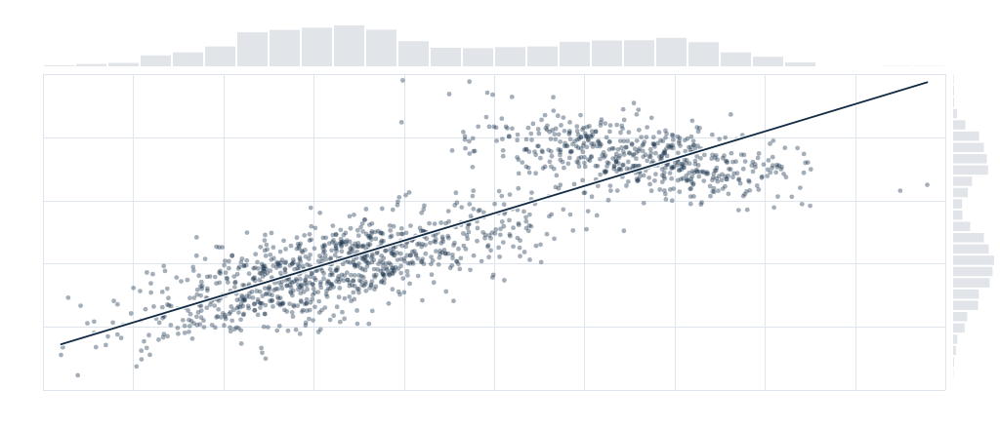

KLIC / 차트
세션 분포 탐색
고정 시드 세션 1,500개 · 사각형 영역 선택, 주변 분포 및 선택 영역 회귀선

| 관측점 | 세션 지속 시간 (분) | 참여도 점수 |
|---|---|---|
| 세션 1 | 4 | 46.7 |
| 세션 2 | 1.9 | 25.5 |
| 세션 3 | 3.2 | 41.4 |
| 세션 4 | 2.5 | 9.9 |
| 세션 5 | 4.8 | 79.7 |
| 세션 6 | 3.6 | 48.7 |
| 세션 7 | 2.6 | 31.6 |
| 세션 8 | 5.9 | 50.5 |
| 세션 9 | 3.5 | 39 |
| 세션 10 | 6.9 | 70.3 |
| 세션 11 | 2.8 | 40.4 |
| 세션 12 | 2.9 | 37.2 |
| 세션 13 | 1.2 | 17.4 |
| 세션 14 | 6.2 | 75.2 |
| 세션 15 | 4.9 | 83.3 |
| 세션 16 | 7.4 | 63.8 |
| 세션 17 | 2.7 | 33 |
| 세션 18 | 3 | 37.1 |
| 세션 19 | 2.9 | 30.7 |
| 세션 20 | 3.8 | 27.4 |
| 세션 21 | 8.4 | 64 |
| 세션 22 | 5.3 | 72.9 |
| 세션 23 | 1.9 | 27 |
| 세션 24 | 7.4 | 68.4 |
| 세션 25 | 2.6 | 37.1 |
| 세션 26 | 2.1 | 42.6 |
| 세션 27 | 6.4 | 69.8 |
| 세션 28 | 5.1 | 58.7 |
| 세션 29 | 1.3 | 15.9 |
| 세션 30 | 2.6 | 29.1 |
| 세션 31 | 5.3 | 73.7 |
| 세션 32 | 2.3 | 27.4 |
| 세션 33 | 7.4 | 69 |
| 세션 34 | 4.8 | 51.2 |
| 세션 35 | 2.8 | 36.6 |
| 세션 36 | 4.6 | 52.3 |
| 세션 37 | 7.3 | 73.3 |
| 세션 38 | 1.8 | 26.6 |
| 세션 39 | 6.6 | 87.2 |
| 세션 40 | 2.6 | 39.2 |
| 세션 41 | 7 | 69.5 |
| 세션 42 | 4.2 | 41.5 |
| 세션 43 | 6.2 | 77.7 |
| 세션 44 | 5.8 | 55.5 |
| 세션 45 | 6.2 | 78.8 |
| 세션 46 | 5.3 | 42.4 |
| 세션 47 | 3.4 | 41.3 |
| 세션 48 | 5.6 | 70.7 |
| 세션 49 | 2.6 | 20.3 |
| 세션 50 | 2 | 23.7 |
| 세션 51 | 5.4 | 55.5 |
| 세션 52 | 5.4 | 84.3 |
| 세션 53 | 3.4 | 34 |
| 세션 54 | 3.2 | 39.8 |
| 세션 55 | 2.5 | 44.5 |
| 세션 56 | 3 | 33.5 |
| 세션 57 | 3.4 | 34.7 |
| 세션 58 | 2.6 | 45.2 |
| 세션 59 | 5.1 | 82.8 |
| 세션 60 | 7 | 63.4 |
| 세션 61 | 6.2 | 69.3 |
| 세션 62 | 6.6 | 67.7 |
| 세션 63 | 6.2 | 74.2 |
| 세션 64 | 6 | 80 |
| 세션 65 | 3 | 33.4 |
| 세션 66 | 6.4 | 75.4 |
| 세션 67 | 6.9 | 75.7 |
| 세션 68 | 4.4 | 52.9 |
| 세션 69 | 5.5 | 77.2 |
| 세션 70 | 4.6 | 58.5 |
| 세션 71 | 3.6 | 45.7 |
| 세션 72 | 2.7 | 41.2 |
| 세션 73 | 6.9 | 79.9 |
| 세션 74 | 5.1 | 79.4 |
| 세션 75 | 5.6 | 82.9 |
| 세션 76 | 7.3 | 82.9 |
| 세션 77 | 3.3 | 50.7 |
| 세션 78 | 2.8 | 41.9 |
| 세션 79 | 6.2 | 78.1 |
| 세션 80 | 5.1 | 46.7 |
| 세션 81 | 6 | 77.3 |
| 세션 82 | 2.7 | 35.7 |
| 세션 83 | 2 | 23.1 |
| 세션 84 | 2.8 | 40 |
| 세션 85 | 6.4 | 68 |
| 세션 86 | 6.6 | 70.9 |
| 세션 87 | 2.2 | 38.4 |
| 세션 88 | 5.4 | 41.2 |
| 세션 89 | 2.1 | 33.9 |
| 세션 90 | 6.3 | 64.6 |
| 세션 91 | 5.5 | 68.6 |
| 세션 92 | 2.8 | 35.2 |
| 세션 93 | 1.8 | 41.5 |
| 세션 94 | 6.9 | 60.4 |
| 세션 95 | 1.9 | 20.6 |
| 세션 96 | 2.4 | 23.8 |
| 세션 97 | 3 | 35.9 |
| 세션 98 | 2.7 | 18.8 |
| 세션 99 | 1.8 | 32.2 |
| 세션 100 | 7.5 | 66.9 |
| 세션 101 | 3.6 | 33.1 |
| 세션 102 | 5.8 | 75.3 |
| 세션 103 | 6.8 | 77 |
| 세션 104 | 8.1 | 68.9 |
| 세션 105 | 3 | 33.9 |
| 세션 106 | 7.6 | 70 |
| 세션 107 | 3 | 47.4 |
| 세션 108 | 2.4 | 39.3 |
| 세션 109 | 3.2 | 29.6 |
| 세션 110 | 5.4 | 76.3 |
| 세션 111 | 2.8 | 24.6 |
| 세션 112 | 3.2 | 44.7 |
| 세션 113 | 6 | 79.3 |
| 세션 114 | 3.8 | 42.5 |
| 세션 115 | 5.9 | 72.2 |
| 세션 116 | 7.2 | 83.1 |
| 세션 117 | 9.8 | 65 |
| 세션 118 | 7.5 | 74.3 |
| 세션 119 | 3.1 | 43.5 |
| 세션 120 | 7.1 | 66.4 |
| 세션 121 | 2 | 37.7 |
| 세션 122 | 6.5 | 76.8 |
| 세션 123 | 2.6 | 40.1 |
| 세션 124 | 6.2 | 73.1 |
| 세션 125 | 7.5 | 79.4 |
| 세션 126 | 3.4 | 34.5 |
| 세션 127 | 8.1 | 78 |
| 세션 128 | 2.2 | 28.3 |
| 세션 129 | 6.3 | 70.8 |
| 세션 130 | 1.3 | 23.3 |
| 세션 131 | 2.7 | 31.1 |
| 세션 132 | 5.6 | 74 |
| 세션 133 | 5.3 | 48.1 |
| 세션 134 | 5.4 | 52.1 |
| 세션 135 | 2.8 | 31.4 |
| 세션 136 | 1.9 | 23 |
| 세션 137 | 3.7 | 46.7 |
| 세션 138 | 3.5 | 38.3 |
| 세션 139 | 2.4 | 37.6 |
| 세션 140 | 4 | 40.8 |
| 세션 141 | 5 | 35.6 |
| 세션 142 | 4.3 | 42.1 |
| 세션 143 | 3.6 | 43 |
| 세션 144 | 6.2 | 69.2 |
| 세션 145 | 2.4 | 37 |
| 세션 146 | 5.3 | 72.1 |
| 세션 147 | 5.8 | 77.3 |
| 세션 148 | 4.8 | 61.4 |
| 세션 149 | 2.4 | 26.1 |
| 세션 150 | 5.9 | 76.6 |
| 세션 151 | 3.1 | 45.5 |
| 세션 152 | 5.4 | 53.3 |
| 세션 153 | 1.3 | 26.2 |
| 세션 154 | 8.1 | 61.3 |
| 세션 155 | 4.6 | 38.3 |
| 세션 156 | 6.3 | 60.1 |
| 세션 157 | 2.5 | 37.5 |
| 세션 158 | 6.6 | 69 |
| 세션 159 | 8.2 | 70.6 |
| 세션 160 | 7.6 | 87.2 |
| 세션 161 | 7.3 | 68.9 |
| 세션 162 | 8.1 | 57.8 |
| 세션 163 | 2.8 | 38.6 |
| 세션 164 | 5.1 | 55.8 |
| 세션 165 | 7.9 | 69.1 |
| 세션 166 | 2.9 | 25.3 |
| 세션 167 | 2.6 | 40.4 |
| 세션 168 | 6 | 79.1 |
| 세션 169 | 4.3 | 46.8 |
| 세션 170 | 2.3 | 25.3 |
| 세션 171 | 1.8 | 32.9 |
| 세션 172 | 6.1 | 77.9 |
| 세션 173 | 3.7 | 36.3 |
| 세션 174 | 5.2 | 49.2 |
| 세션 175 | 6.9 | 77.4 |
| 세션 176 | 3.6 | 39.1 |
| 세션 177 | 3.5 | 40 |
| 세션 178 | 3 | 35.4 |
| 세션 179 | 2.5 | 32.2 |
| 세션 180 | 3.8 | 37.1 |
| 세션 181 | 2.2 | 28.6 |
| 세션 182 | 6.6 | 68.7 |
| 세션 183 | 4.3 | 36.5 |
| 세션 184 | 2.5 | 36.6 |
| 세션 185 | 6 | 76.9 |
| 세션 186 | 5.7 | 82.7 |
| 세션 187 | 1.2 | 37.2 |
| 세션 188 | 6.7 | 65.1 |
| 세션 189 | 6.4 | 76.1 |
| 세션 190 | 2.7 | 45.6 |
| 세션 191 | 7.1 | 71.8 |
| 세션 192 | 3 | 37.8 |
| 세션 193 | 5.7 | 75.3 |
| 세션 194 | 7.1 | 71.4 |
| 세션 195 | 7.7 | 66.8 |
| 세션 196 | 2.7 | 24.8 |
| 세션 197 | 4.9 | 48.1 |
| 세션 198 | 4.9 | 49.1 |
| 세션 199 | 3.2 | 33.7 |
| 세션 200 | 4.7 | 47.9 |
| 세션 201 | 3.6 | 33.5 |
| 세션 202 | 1.6 | 18.4 |
| 세션 203 | 6 | 73.7 |
| 세션 204 | 4 | 46.2 |
| 세션 205 | 3.1 | 18.4 |
| 세션 206 | 2.5 | 24.1 |
| 세션 207 | 3.9 | 43.3 |
| 세션 208 | 3.4 | 46.1 |
| 세션 209 | 3.8 | 48.4 |
| 세션 210 | 3.1 | 42.4 |
| 세션 211 | 3.7 | 45.2 |
| 세션 212 | 5.1 | 45.1 |
| 세션 213 | 3.5 | 45.5 |
| 세션 214 | 3.9 | 31.9 |
| 세션 215 | 6.6 | 75.7 |
| 세션 216 | 7 | 77.5 |
| 세션 217 | 4.3 | 49.1 |
| 세션 218 | 5.9 | 78.7 |
| 세션 219 | 5.1 | 63 |
| 세션 220 | 6 | 76.4 |
| 세션 221 | 4 | 49.4 |
| 세션 222 | 6.9 | 71.8 |
| 세션 223 | 1.7 | 38.9 |
| 세션 224 | 3.7 | 50.2 |
| 세션 225 | 6.9 | 62 |
| 세션 226 | 7.2 | 85.3 |
| 세션 227 | 4.2 | 50 |
| 세션 228 | 5.6 | 55.6 |
| 세션 229 | 6.3 | 71.8 |
| 세션 230 | 3 | 31 |
| 세션 231 | 3 | 49.3 |
| 세션 232 | 4 | 30.2 |
| 세션 233 | 6.7 | 63 |
| 세션 234 | 1.6 | 34.8 |
| 세션 235 | 3.8 | 38.1 |
| 세션 236 | 4.4 | 44.3 |
| 세션 237 | 3.4 | 40.3 |
| 세션 238 | 6 | 73 |
| 세션 239 | 6.6 | 75.1 |
| 세션 240 | 4.1 | 40 |
| 세션 241 | 2.5 | 35.6 |
| 세션 242 | 3.8 | 36.3 |
| 세션 243 | 4 | 49.7 |
| 세션 244 | 2.2 | 26.5 |
| 세션 245 | 2.7 | 35.3 |
| 세션 246 | 6.9 | 74.1 |
| 세션 247 | 7.3 | 81.8 |
| 세션 248 | 5.6 | 70.7 |
| 세션 249 | 5.4 | 79.2 |
| 세션 250 | 4 | 84.8 |
| 세션 251 | 0.8 | 27.1 |
| 세션 252 | 7.4 | 69.5 |
| 세션 253 | 1.6 | 26.1 |
| 세션 254 | 7.2 | 58.9 |
| 세션 255 | 2.5 | 39.2 |
| 세션 256 | 6.4 | 85.5 |
| 세션 257 | 3.9 | 58.6 |
| 세션 258 | 1.9 | 28.2 |
| 세션 259 | 5.5 | 85.5 |
| 세션 260 | 7.4 | 80.8 |
| 세션 261 | 2.9 | 31.9 |
| 세션 262 | 3.2 | 45.7 |
| 세션 263 | 2.9 | 49 |
| 세션 264 | 7.5 | 63.7 |
| 세션 265 | 3.9 | 45.5 |
| 세션 266 | 6.4 | 73.7 |
| 세션 267 | 7.2 | 76.4 |
| 세션 268 | 3.4 | 37.2 |
| 세션 269 | 2.2 | 39.2 |
| 세션 270 | 7.7 | 79.3 |
| 세션 271 | 7.6 | 69.8 |
| 세션 272 | 6 | 80 |
| 세션 273 | 2.5 | 41.3 |
| 세션 274 | 7 | 76.7 |
| 세션 275 | 6.4 | 74.7 |
| 세션 276 | 2.4 | 40.5 |
| 세션 277 | 5.4 | 51.2 |
| 세션 278 | 1.9 | 26.7 |
| 세션 279 | 5.5 | 40.5 |
| 세션 280 | 5.1 | 42.2 |
| 세션 281 | 6.3 | 70.7 |
| 세션 282 | 2.4 | 45.3 |
| 세션 283 | 5.9 | 73.3 |
| 세션 284 | 3.5 | 42.5 |
| 세션 285 | 4.3 | 47 |
| 세션 286 | 3.9 | 44.8 |
| 세션 287 | 3.6 | 52.3 |
| 세션 288 | 4.3 | 49.6 |
| 세션 289 | 3.2 | 36.4 |
| 세션 290 | 2.7 | 38.4 |
| 세션 291 | 7.2 | 69.3 |
| 세션 292 | 5.3 | 52.3 |
| 세션 293 | 3.6 | 48.7 |
| 세션 294 | 6.1 | 70.9 |
| 세션 295 | 1.6 | 25.2 |
| 세션 296 | 5.5 | 75.7 |
| 세션 297 | 2.7 | 30.7 |
| 세션 298 | 3.3 | 36.2 |
| 세션 299 | 3.3 | 46.8 |
| 세션 300 | 6.7 | 86.2 |
| 세션 301 | 2.1 | 25.4 |
| 세션 302 | 3.6 | 53.8 |
| 세션 303 | 3.3 | 36 |
| 세션 304 | 7.5 | 70.3 |
| 세션 305 | 3.7 | 34.2 |
| 세션 306 | 4.4 | 48.5 |
| 세션 307 | 5.7 | 80.9 |
| 세션 308 | 5.8 | 86.3 |
| 세션 309 | 4.1 | 47.8 |
| 세션 310 | 4.2 | 58.4 |
| 세션 311 | 3.2 | 38 |
| 세션 312 | 4.4 | 44 |
| 세션 313 | 2.1 | 19.8 |
| 세션 314 | 8.2 | 68.4 |
| 세션 315 | 0.7 | 14.2 |
| 세션 316 | 7.6 | 74.9 |
| 세션 317 | 6.6 | 70.9 |
| 세션 318 | 2.6 | 34.1 |
| 세션 319 | 6.2 | 84.4 |
| 세션 320 | 3.2 | 46.4 |
| 세션 321 | 4.2 | 50.3 |
| 세션 322 | 2.7 | 40.6 |
| 세션 323 | 4.2 | 50.3 |
| 세션 324 | 7.4 | 66.4 |
| 세션 325 | 1.1 | 22.1 |
| 세션 326 | 3.6 | 44.4 |
| 세션 327 | 2.2 | 28.3 |
| 세션 328 | 2.1 | 24.6 |
| 세션 329 | 6.8 | 79 |
| 세션 330 | 7.9 | 71.5 |
| 세션 331 | 2.9 | 28.2 |
| 세션 332 | 2.5 | 32.7 |
| 세션 333 | 2.5 | 30.3 |
| 세션 334 | 2.5 | 30.5 |
| 세션 335 | 2.5 | 35 |
| 세션 336 | 3.2 | 22.2 |
| 세션 337 | 6.1 | 73.9 |
| 세션 338 | 5.7 | 83.8 |
| 세션 339 | 3 | 36.8 |
| 세션 340 | 5.4 | 68.8 |
| 세션 341 | 3.6 | 45.5 |
| 세션 342 | 3.1 | 44 |
| 세션 343 | 8.2 | 71 |
| 세션 344 | 6.6 | 88.7 |
| 세션 345 | 7.1 | 70.5 |
| 세션 346 | 6.5 | 76.9 |
| 세션 347 | 2.1 | 19.8 |
| 세션 348 | 3.9 | 45.4 |
| 세션 349 | 5.8 | 71.6 |
| 세션 350 | 3.8 | 36.6 |
| 세션 351 | 4.7 | 45.7 |
| 세션 352 | 5.8 | 79.4 |
| 세션 353 | 3.6 | 41.9 |
| 세션 354 | 1.6 | 20.3 |
| 세션 355 | 2.5 | 38.6 |
| 세션 356 | 1.3 | 39.3 |
| 세션 357 | 1.6 | 18.1 |
| 세션 358 | 3.2 | 34.5 |
| 세션 359 | 5.8 | 82 |
| 세션 360 | 7.8 | 65.9 |
| 세션 361 | 3 | 38.1 |
| 세션 362 | 4.7 | 52.6 |
| 세션 363 | 3.2 | 49.2 |
| 세션 364 | 3.9 | 38.8 |
| 세션 365 | 3.7 | 36.4 |
| 세션 366 | 6.7 | 73.9 |
| 세션 367 | 6.4 | 83.9 |
| 세션 368 | 7.3 | 66.2 |
| 세션 369 | 2.7 | 40.2 |
| 세션 370 | 5.6 | 82.4 |
| 세션 371 | 4.4 | 39.7 |
| 세션 372 | 2.8 | 48.2 |
| 세션 373 | 4.5 | 48.7 |
| 세션 374 | 4.1 | 42.6 |
| 세션 375 | 3.3 | 46.2 |
| 세션 376 | 3.2 | 39.8 |
| 세션 377 | 8 | 72.7 |
| 세션 378 | 2.2 | 22.3 |
| 세션 379 | 6.6 | 76.4 |
| 세션 380 | 6.1 | 70.9 |
| 세션 381 | 1.4 | 26.6 |
| 세션 382 | 3.1 | 56.1 |
| 세션 383 | 4.7 | 55.1 |
| 세션 384 | 3.5 | 21 |
| 세션 385 | 2.5 | 19.9 |
| 세션 386 | 4.4 | 41.9 |
| 세션 387 | 6.5 | 78 |
| 세션 388 | 8.4 | 71.9 |
| 세션 389 | 6.2 | 78.5 |
| 세션 390 | 2.4 | 27.4 |
| 세션 391 | 2.7 | 27.5 |
| 세션 392 | 7 | 75.1 |
| 세션 393 | 6.2 | 85.6 |
| 세션 394 | 3.4 | 43.6 |
| 세션 395 | 5.3 | 45 |
| 세션 396 | 2.2 | 29.8 |
| 세션 397 | 5.7 | 63.8 |
| 세션 398 | 7.6 | 66.7 |
| 세션 399 | 7 | 71.9 |
| 세션 400 | 6.2 | 80 |
가상 세션 1,500개입니다. 드래그로 사각형 영역을 선택하고, 영역을 이동하거나 크기를 조절해 선택된 관측값을 살펴보세요.